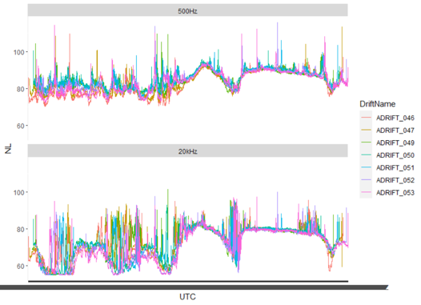
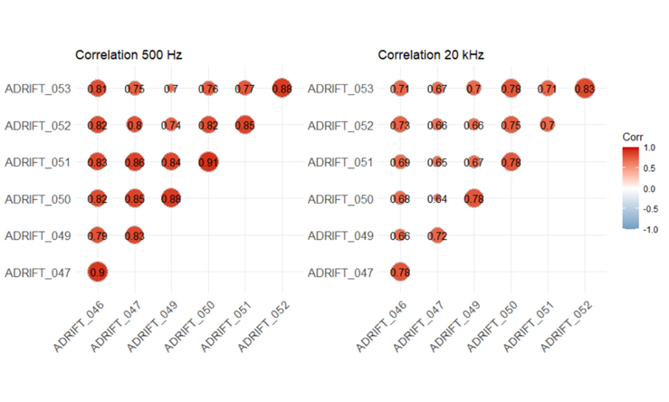

Spatial Variation in Noise
Analyzing Clustered Recorders to Assess Spatial Variation in Sound Levels
There is a concerted effort to understand whether and how ambient noise levels change between the baseline, construction, and operational phases of offshore wind farms and how this may affect different species present in the region. These baseline data are critical to monitor changes in sound levels from anthropogenic sources in space and time as activities related to offshore wind development increase.
Sound pressure levels vary as a function of three-dimensional location as well as time. Vertical placement of sensors will lead to different propagation conditions due to the temperature profile and thermocline, through surface and bottom reflections, and proximity to noise sources. Understanding the spatial extent of noise is a particularly challenging question for single sensor studies. Some of the principal questions needing to be addressed include, are the noise levels measured at a given hydrophone representative of those experienced by the species monitored? How do assumptions about frequency bands and integration periods (e.g., minutes vs. hours) vary over space?
The Adrift study project uses clusters of drifting recorders to produce snapshots of ambient noise levels and animal presence in wind energy areas that compliment single sensor seafloor hydrophones. With these buoys, we can begin to document spatial variability in soundscapes, validate propagation models, and better understand how well single sensors represent sound within the greater region.
A preliminary examination of the spatial cohesion of ambient noise levels was conducted across an array of 7 recorders drifting for 8 days in the Morro Bay region. Figure 1 shows the 2-minute median noise level in two third octave bins. Considerable variation in noise levels were observed in the first few days across both third octave bins with considerable variation in the 20 kHz bin. Storms moving through the area during the second half of the deployment raised the baseline noise levels nearly uniformly.

The cohesion of these noise levels can be quantified using correlation scores. Correlation scores measure the strength and direction of the linear relationship between multiple measurements. Scores range from -1, indicating a perfectly inverse relationship between noise levels at different locations, and +1 indicating a perfect and positive correlation between noise levels at different locations. In order to assume that noise levels are similar across the study area, we would expect correlation scores between all instruments at or approaching 1.

Figure 2 shows positive correlation between all drifting recorders within the region with scores ranging between 0.7 and 0.91 in the 500 Hz band and 0.64 and 0.83 in the 20 kHz band. This indicates that, on average, noise levels were somewhat correlated over the deployment and that noise levels from more closely spaced units were more highly correlated, as expected. Much of this correlation is attributed to the regional scale storms that uniformly affected the area.
Because the data from the drifting recorders inherently cover both space and time, we can model sound levels across the entire region Figure 3. This pre-storm modelled data provides a view of the soundscape averaged across the region. The brighter colors (relating to higher noise levels) in the northwest were attributed to the approaching storm.

This preliminary exploration of the data highlights some interesting spatial aspects of noise that warrant further investigation. Future analyses may include:
Evaluate noise levels as a function of distance between sensors. Quantifying this relationship will help to validate propagation models and improve future estimates of noise levels from disparate sensors.
Parse environmental and anthropogenic contributions to noise levels. Depth-dependent empirical models for wind-generated noise can be applied to drifting recorders (Hildebrand et al. 2021). Then, subtraction of wind-associated noise allows evaluation of sound maps such as Figure 3 for biological and anthropogenic activity.
Evaluate depth-dependent changes in ambient noise levels. Sound levels recorded by drifting recorders can be compared with bottom-moored sensors to measure depth dependent changes in ambient noise levels. This is particularly relevant if future acoustic monitoring is limited to seafloor sensors, which do not occupy the predominant habitat of most marine mammals, or sensors that modulate their depth throughout the survey period (e.g., gliders).